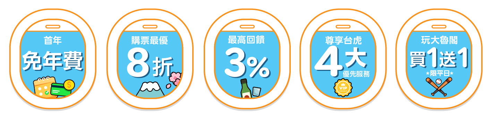
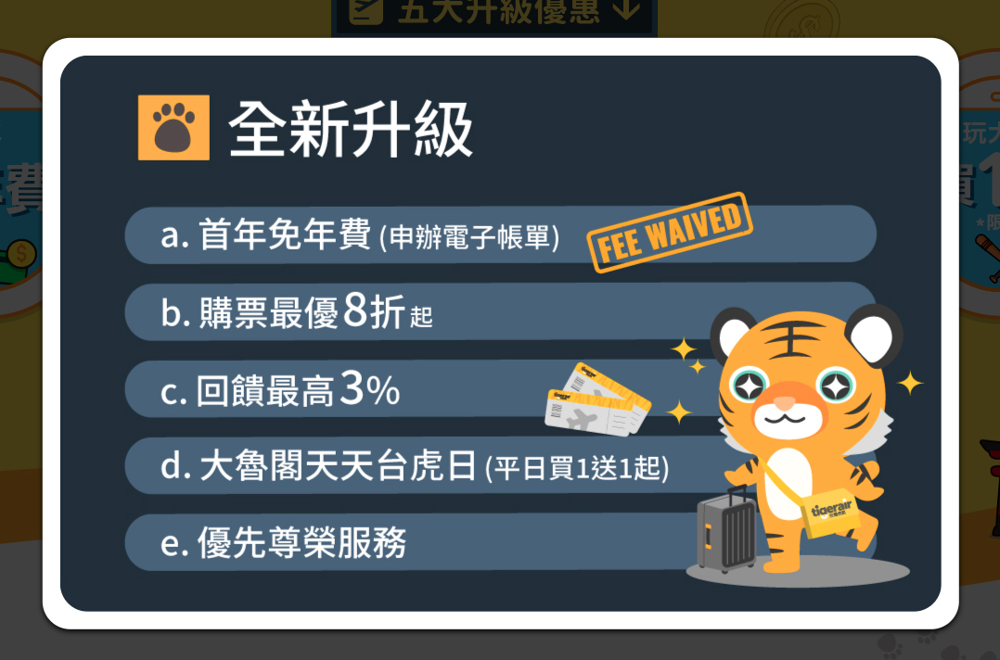
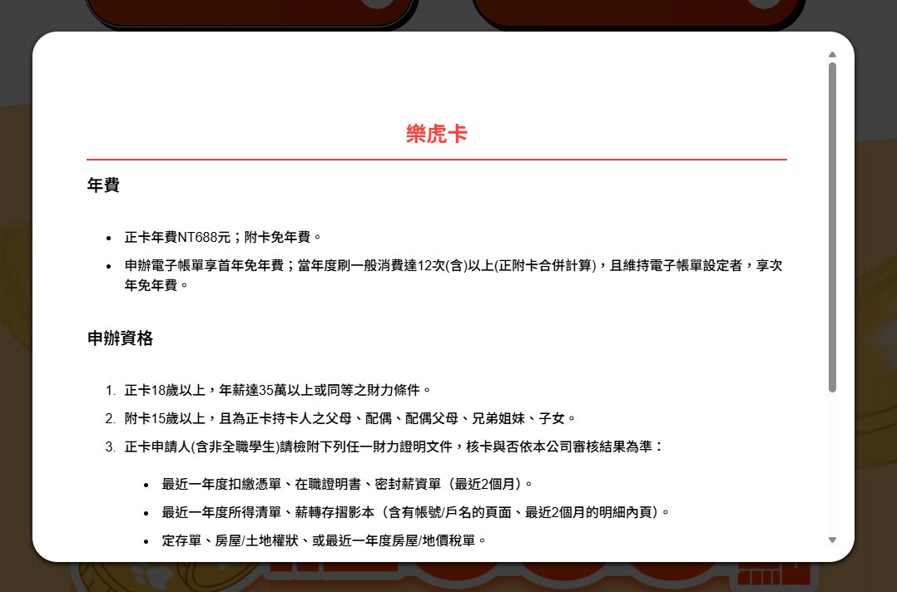
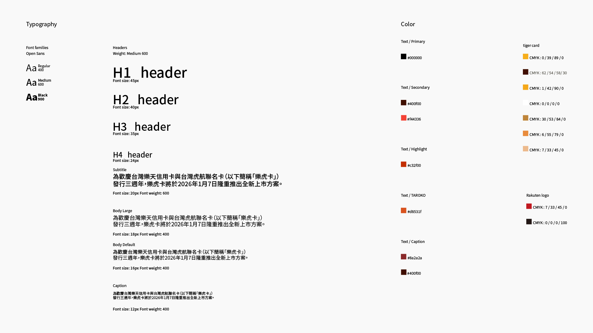

I worked across the card visuals and campaign page, turning credit card benefits into a travel-themed digital experience. I also built the page interactions and animations using HTML, CSS, and JavaScript.
Delivered the full lifecycle from physical card design to frontend launch within a 90-day sprint, ensuring 100% fidelity by eliminating cross-department handoff gaps
Gave the main 3% reward visual priority and used a Swiper.js carousel to present the remaining four benefits in a compact, mobile-friendly layout.
Used CSS and JavaScript animations instead of video assets for selected interactions, keeping the boarding-themed introduction closely integrated with the webpage.
Problem:
Tigerair wanted to showcase all five major card benefits. On mobile
screens, displaying every benefit in a standard vertical layout would make the page much longer.

Solution:
Visual Hierarchy & Interactive Carousel
I gave the main 3% reward the strongest visual emphasis and used a Swiper.js carousel for
the remaining four benefits. This helped users focus on the key offer while browsing the
other benefits in a more compact layout.
Problem:
The page contained detailed offer terms and strong brand colors, which
could make the content feel dense and compete for attention.
Solution:
1.Color Sections
I used warm
orange, red, and yellow tones to separate content sections and guide users through the page. I also
designed two modal styles:
2.Two-Tiered Modals


I created an animated introduction inspired by the airport boarding experience to connect the campaign with Tigerair's brand identity.
I used a MutationObserver to monitor modal visibility and dynamically compensate for scrollbar width. This prevents the page content from shifting horizontally when the background scroll is locked.
// Monitor popup state and fix the layout shift
const observer = new MutationObserver((mutations) => {
let scrollBarWidth = window.innerWidth - document.documentElement.clientWidth;
if ($popup.is(':visible') && scrollBarWidth > 0) {
$('body').css({
'overflow': 'hidden',
'border-right': scrollBarWidth + 'px solid transparent',
'box-sizing': 'border-box'
});
} else {
$('body').css({ 'overflow': '', 'border-right': '' });
}
});
I used CSS keyframes for the card's rocking motion and the CTA's breathing effect, reducing reliance on video assets for these interactions.
// A breathing animation for the CTA button @keyframes rockCCW { 0%, 100% { transform: rotate(0deg); } 50% { transform: rotate(-1deg); } } // A physics-based shaking effect for the new tiger card .hand-item-card-anim { animation: rockCCW 0.7s ease-in-out infinite; transform-origin: bottom center; } // A physics-based shaking effect for the designated channels .hand-item-light-anim { animation: sequence-breath 4.5s ease-in-out infinite; transform-origin: center center; }
I used JavaScript timing controls to coordinate the boarding gate, mascot, display board, and card reveal, creating a consistent transition into the main content.
// Animation Orchestrator: Sequence Controller const animationTimeline = [ { el: boardingGate, class: 'visible', delay: 0 }, { el: newUpgrade, class: 'breathe', delay: 250 }, { el: noticeBoard, class: 'slide-down', delay: 350 }, { el: tigercard, class: 'fade-in', delay: 450 } ]; // Execute sequence with cumulative delays let currentTime = 0; animationTimeline.forEach(step => { currentTime += step.delay; setTimeout(() => step.el.classList.add(step.class), currentTime); }); // Final Transition: Loading to Content setTimeout(() => { loadingScreen.style.display = 'none'; initCampaignAnimations(); }, T_total);
I followed the ReX design guidelines and applied consistent brand colors, typography, and visual styles across the campaign page to maintain a cohesive experience.

The redesign brought the Tigerair card experience together across visual design, user experience, and front-end development. It made key benefits easier to identify, organized detailed information into clearer sections, and introduced interactive elements to create a more engaging browsing experience.